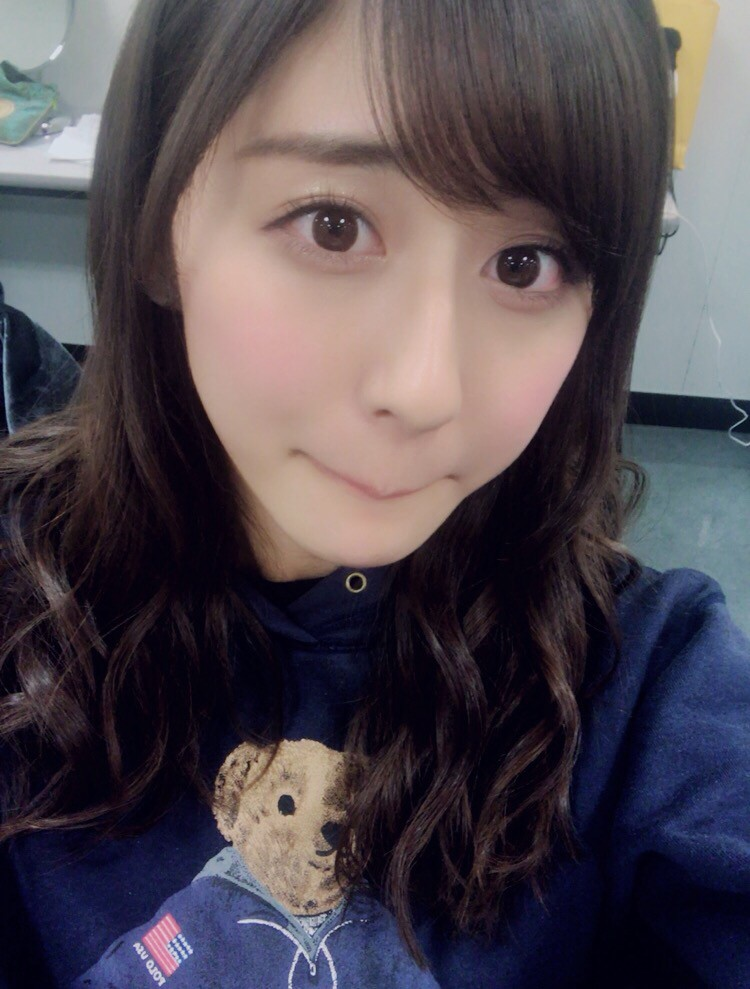
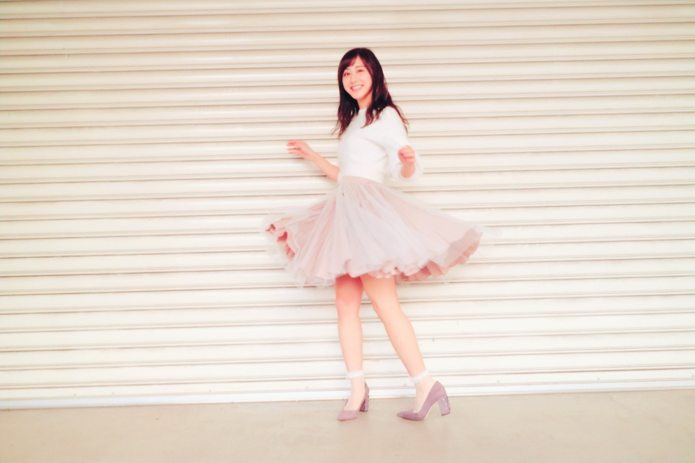
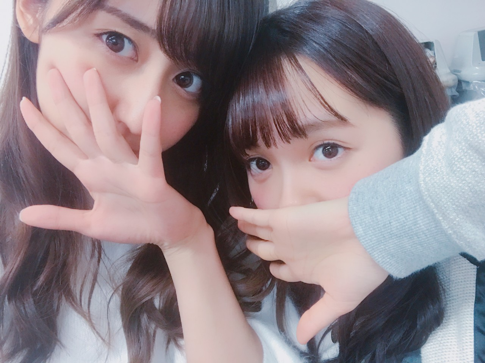

| 2017/03 21 Tue | 3、2、1！ |
今日はランドセルの日。催眠術の日。カラー映画の日。Twitter誕生日。
ランドセルの日は、
3+2+1が小学校の修業年数の6になるかららしいです！
未だにランドセルが取ってあるよ〜
斎藤家は！
催眠術の日は、
催眠術をかけるときの掛け声が
3！2！1！だからなんだって(笑)
掛け声だけで決まる記念日って凄い！！
十文字先生に催眠術かけてもらった日は
ずっと忘れられないな〜
本当に楽しかった☺︎
本当にかかった！
また催眠術かけられたい〜\( ˆ ˆ )/

かっぱ口。
！ChihAnswer！
 しゅんちゃんさん
しゅんちゃんさん
・ちはるちゃんが読むべきと思う漫画は何ですか？
→面白い漫画は沢山あるから選べないけど
忘れられない漫画は、「星守る犬」。
犬を飼ってる人の心には
絶対響く、大泣きした漫画！
一回レンタルで読んだのだけど
感動しすぎてわざわざ買いました。
それくらいに良かった〜
やなぎ@うなぎ⊿さん
・人生でこれだけはやっておきたい、一度は経験したいことってありますか？
→子供の頃からずっと思ってるのは
スカイダイビングやバンジージャンプ、
スキューバダイビング！
空を飛んだり魚と一緒に泳いだりしてみたい〜
でもまだまだやりたい事いっぱいあるかな◎
白タンのヴァイオパっちさん
・春の訪れを感じる食べ物って何ですか？
→街中に桜味のお菓子や飲み物が
出てくるようになったら
春が来たな〜と感じます◎
スタバの桜フラペチーノは毎年楽しみにしていて
一年中桜の季節だったらいいのになって！
２回飲んだんだけど、
終わる前にもう一回飲まないと(> <)
ぢらふ。さん
・気持ちが物凄い落ちた時はどうする？
→ん〜毎日の大切な時間を
悲しい気持ちや辛い気持ちのまま
過ごすのは勿体ないなと切り替える。
一度きりの人生なんだから
好きなものや好きな事、
自分が楽しいと思うことに時間を割いた方が
絶対に自分のためになると思うし！
無心になって散歩するのも良し
音楽を聴くも良し、
とにかく気持ちを切り替えることかな〜
後は夜遅くまで起きてないで早く寝るとか！
はるのるさん
・私は人に相談するタイプじゃなく相談されるタイプです！でも、私だって相談したい時はあります。でもそういうことしてこなかったからどういう風に相談したらいいか分かりません。
→分かる！！一緒だ〜
私も自分からは相談出来ないタイプ。
相談することってとっても勇気いるよね。
ん〜、自分の事を理解してくれている
友達や親に、さり気なく、
あのね！少し聞いて欲しい事があるんだけど...
ってまずサラっと伝えてみる事で
言いやすくなる気がするな〜
あんまり参考にならなかったらごめんね(> <)
相談出来るようになったらいいね(> <)
るぅさん
・部活で部長なのですが後輩を怒れなくて不甲斐ない思いをしています。でも周りは巻き込みたくないです。ちーちゃんは、自分の事が嫌いで嫌いで仕方なくなったとき、どうしてますか？
→私はそういう時、
親に話を聞いてもらっちゃうかな。
親は何があっても最後まで
味方でいてくれるから。
でも周りを巻き込みたくないのなら、
部活の時だけでなく日常生活から
思った事はすぐ口に出す事を意識して
部活の時にもそれが言いやすいようにする事が一番早いのかな〜と思う！
でも私は厳しくて毎日怒る先輩よりも
怒ることではなく褒めることで
成長させてくれる先輩の方が好きだけどな☺︎
頼りないなんて思わないと思うよ！大丈夫。
今日は後半人生相談みたいになってしまった(> <)
色々考えて言葉を選んだつもりですが
参考にならなかったらごめんなさい(> <)
でも少しでも届けば嬉しいな◎

ふわり。ひらり。
----------------------------------------♡
♬ ChihaMusic
「切手のないおくりもの」WANIMAさん
前にも載せてしまったんだけど、
歌詞が今日のブログに
ぴったりかと思って！
たった2分でこんなに感動できて
心に届く曲って
なかなかない気がする。
"寂しい時に歌ってほしい
遠い空からこの歌を
私からあなたへ"
ひとりじゃないよ！

めーちゃんらじらー！復帰、
本当におめでとうヽ(；；)丿
4月からまた元気な声が
ラジオで聴けるのはとても嬉しい...！
良かったヽ(；；)丿
乃木の活動復帰もずっと待ってるよ〜
めーちゃんいないと寂しいもん。。
会いたいな♡
おやすみ
斎藤ちはる
コメント(227)
2017/03/21 23:59